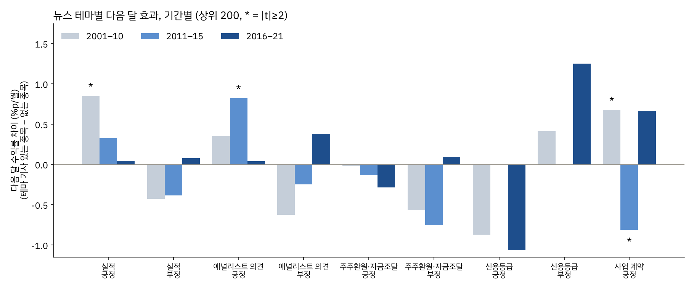

뉴스 테마 판정 기록 (5개 테마 + 월말 논란)
보고서용 · 11/20 · 데이터: 팀 정형 데이터셋(예원) + 뉴스 129만 건(제목 키워드) · 코드: yw_run/theme_judge_yw.py, h5b_late_yw.py · 결과: out_yw/theme_judge_full/, out_yw/h5b_late/
요약
- ESG와 같은 틀로 뉴스 테마 5개(실적, 애널리스트 의견, 주주환원·자금조달, 신용등급, 사업 계약)를 긍정·부정으로 나눠 판정했다.
- 미리 정한 기준을 통과한 것은 긍정 쪽 3개: 실적 호재(FM t 2.9), 애널리스트 목표가 상향(FM t 2.7), 수주·공급계약(FM t 2.1). 부정 쪽은 모두 통과 못 함.
- 하지만 실적·애널리스트 효과는 2015년까지에 몰려 있고 2016–21엔 거의 0이다(+0.05, +0.04%p). 감성 점수와 같은 모양이다. 수주는 기간마다 방향이 뒤집혀 불안정하다.
- XGBoost에 넣으면 실적(11년 중 8년, 2016–21엔 6년 중 5년)과 애널리스트(7년) IC가 올랐다. 평균 증가는 작다(+0.003, t 1.1).
- 월말까지 이어진 논란(H5-B)은 다음 달 효과가 없어 종료(−0.40%p, t −0.6).
- 다음 단계: '실적' 테마를 파 보기 1순위로 한다(사람 확인, 키워드 vs 임베딩, 테마 기사 논조).
1. 왜 했나
ESG는 다음 달 효과가 없었다. 11/18 피드백대로 한 명이 여러 테마를 같은 기준으로 빠르게 걸러서, 통과한 테마만 팀이 깊게 판다. 테마는 "돈과 직결되는데 시장이 천천히 따라간다고 알려진 소식"으로 골랐다. 예: 실적 발표 뒤 주가 표류, 애널리스트 의견 변경 뒤 주가 표류.
2. 방법 (ESG와 같은 틀)
| 테마 | 긍정 기사 (제목 키워드) | 부정 기사 (제목 키워드) |
|---|
| 실적 | 어닝 서프라이즈, 깜짝 실적, 실적 호조, 최대 실적, 흑자전환, 실적 개선 | 어닝 쇼크, 실적 부진·악화, 적자전환·확대 (전망·우려·예상 제목 제외) |
| 애널리스트 의견 | 목표가↑, 목표(주)가 상향, 투자의견 상향 | 목표가↓, 목표(주)가 하향, 투자의견 하향 |
| 주주환원·자금조달 | 자사주 매입·취득·소각, 배당 확대 | 유상증자, CB·BW·교환사채, 블록딜, 지분 매각, 오버행 |
| 신용등급 | 신용등급 상향 | 신용등급 하향·강등 |
| 사업 계약 | 수주, 공급(납품) 계약 | - |
표본: 해마다 직전 12월 시총 상위 200 × 그해 기사 있는 종목, 2001–2021 (약 4만 9천 종목-월). 이달 말까지의 기사로 신호를 만들고 다음 달 수익률을 봄. 키워드 사전(theme_rules.py v0)은 결과를 보기 전에 고정.
3. 판정 기준 (결과 보기 전에 정함)
부정: 다음 달 차이 t ≤ −2 또는 통제 9개 FM t ≤ −2 / 긍정: 다음 달 차이 t ≥ 2 또는 FM t ≥ 2 / 최근 유지: 통과한 쪽의 2016–21 다음 달 차이가 같은 방향
→ 통과 + 최근 유지: 지지 (XGBoost IC가 11년 중 6년 이상 오르면 모델 반영 후보) / 통과했지만 2016–21 뒤집힘: 보류 / 미통과: 빼기 / 종목-월 300개 미만: 표본 부족
4. 결과

| 테마 | 신호 | 종목-월 | 같은 달(참고) | 다음 달 차이 | FM (통제 9개) | 2001–10 / 2011–15 / 2016–21 |
|---|
| 실적 | 긍정 | 6,011 | +2.32 (t 11.6) | +0.50 (t 2.3) | +0.57 (t 2.9) | +0.85* / +0.33 / +0.05 |
| 부정 | 2,664 | −2.97 (t −8.3) | −0.27 (t −0.7) | −0.38 (t −1.2) | −0.43 / −0.38 / +0.08 |
| 애널리스트 의견 | 긍정 | 6,445 | +4.99 (t 16.5) | +0.38 (t 1.6) | +0.56 (t 2.7) | +0.35 / +0.82* / +0.04 |
| 부정 | 4,206 | −3.59 (t −11.2) | −0.24 (t −0.6) | −0.22 (t −0.6) | −0.62 / −0.25 / +0.38 |
| 주주환원·자금조달 | 긍정 | 1,217 | +1.37 (t 2.2) | −0.12 (t −0.4) | −0.02 (t −0.0) | −0.02 / −0.13 / −0.29 |
| 부정 | 2,624 | −1.27 (t −3.6) | −0.43 (t −1.3) | −0.38 (t −1.2) | −0.57 / −0.76 / +0.09 |
| 신용등급 | 긍정 | 310 | +1.19 (t 1.5) | −0.74 (t −1.0) | −0.49 (t −1.1) | −0.87 / 0.00 / −1.06 |
| 부정 | 263 | −3.85 (t −3.9) | +0.55 (t 0.5) | +0.30 (t 0.5) | 표본 부족 |
| 사업 계약 | 긍정 | 6,709 | +0.37 (t 1.7) | +0.32 (t 1.5) | +0.41 (t 2.1) | +0.68* / −0.81* / +0.67 |
단위 %p/월. * = |t| ≥ 2. 순지표(긍정−부정) 다음 달 IC는 모든 테마에서 유의하지 않음(t 0.1~1.2).
| 테마 | XGBoost 기준 IC → +테마 | 차이 t | 오른 해 (11년 중) | 2016–21 오른 해 |
|---|
| 실적 | 0.0207 → 0.0242 | 1.1 | 8 | 5 / 6 |
| 애널리스트 의견 | 0.0207 → 0.0237 | 1.0 | 7 | 3 / 6 |
| 주주환원·자금조달 | 0.0207 → 0.0203 | −0.2 | 5 | 3 / 6 |
| 신용등급 | 0.0207 → 0.0212 | 0.3 | 7 | 3 / 6 |
| 사업 계약 | 0.0207 → 0.0176 | −1.2 | 4 | 3 / 6 |
기준 IC 0.0207은 상위 200 뉴스 표본 기준이라 전체 코스피 모델 IC(0.091)와 다르다.
5. 판정과 해석
| 테마 | 규칙상 판정 | 해석 |
|---|
| 실적 | 지지 (긍정) | 실적 호재 기사가 난 종목은 다른 변수를 통제해도 다음 달 +0.57%p. 실적 발표 뒤 주가가 천천히 따라가는 현상과 같은 방향. 다만 효과는 2001–10에 가장 크고 2016–21엔 거의 0. XGBoost에서는 2016–21에도 6년 중 5년 IC가 올라, 단순 차이로 안 보이는 다른 변수와의 조합 효과가 남아 있을 수 있음 |
| 애널리스트 의견 | 지지 (긍정) | 목표가 상향 기사 종목이 다음 달 +0.56%p(통제 후). 효과가 2011–15에 몰려 있고 2016–21엔 거의 0. XGBoost 7/11년 |
| 사업 계약 | 지지 (긍정), 불안정 | FM t 2.1로 겨우 통과. 2011–15엔 반대 방향(t −2.1)이고 XGBoost에 넣으면 IC가 떨어짐(4/11년) → 모델 반영 안 함 |
| 주주환원·자금조달 | 빼기 | 같은 달엔 반응하지만(자사주 +1.4, 증자 −1.3) 다음 달은 없음 |
| 신용등급 | 빼기 (부정은 표본 부족) | 기사가 적고 효과 없음 |
| 부정 기사 전반 | 모두 미통과 | 나쁜 소식은 같은 달에 크게 반영(실적 악재 −3.0, 목표가 하향 −3.6%p)되고 다음 달엔 남지 않음 |
조심할 점 1: 최근 유지 기준이 약했다. 기준을 "2016–21에 방향만 같으면 됨"으로 정해서, 실적(+0.05)·애널리스트(+0.04)는 거의 0인데도 통과했다. 규칙은 결과를 보고 바꾸지 않으므로 판정은 '지지'로 두되, "효과는 2015년까지 뚜렷했고 최근엔 약하다"를 함께 기록한다. 감성 점수 결과(2015년까지만 다음 달 예측)와 같은 모양이다.
조심할 점 2: 여러 개를 동시에 봤다. 9개 신호를 보면 우연히 t 2를 넘는 게 0.5개쯤 나올 수 있다. 실적(t 2.9)은 우연으로 보기 어렵지만, 사업 계약(t 2.1)은 우연일 수 있어 불안정한 기간 결과와 함께 낮게 본다.
왜 긍정만 남나 (해석): 나쁜 소식은 투자자가 즉시 팔아 그달에 반영되고, 좋은 소식은 천천히 반영된다는 연구들이 있다. 같은 달 반응도 부정이 더 크다.
6. 월말 진행 중 논란 (H5-B)
정의(미리 정함): H5의 급증(부정 ESG 5건 이상, 평소 3배 이상) 중 그달 마지막 7일에도 부정 기사가 있는 경우 = 이달 말에 논란이 아직 진행 중. 비교는 급증했지만 마지막 7일엔 기사가 없는 '월초 종료'.
결과: 월말 진행 406건, 다음 달 −0.40%p (t −0.6), 1~3개월 누적 −0.80%p (t −0.7), FM −0.31 (t −0.8). 월초 종료 567건은 다음 달 −1.10%p (t −1.9)로 기준(t −2)에 조금 못 미침.
판정: 종료. 이달 말까지 이어진 논란이라도 다음 달에 뚜렷한 추가 하락은 없다. H5(지속 논란)와 같은 결론.
7. 다음 단계
| 순위 | 무엇 | 내용 | 담당 |
|---|
| 1 | 실적 테마 파 보기 | ① 제목 50건 사람 확인(정밀도 80%) ② 키워드 vs 임베딩 비교(교수님 질문) ③ 실적 기사 논조(감성 점수)로도 같은 효과가 나는지(코랩) ④ 2016–21 효과가 정말 0인지, XGBoost에서만 남는 이유 확인 | 아영 ①, 이안 ②④, 영섭 ③ |
| 2 | 애널리스트 의견 | 실적과 겹치는 기사가 많을 수 있음(목표가 상향 사유가 실적). 두 테마를 함께 넣었을 때 각자 남는지 확인 | 영섭 |
| 3 | 사업 계약 | 보류. 기간마다 방향이 바뀌고 모델 IC를 낮춤 | - |